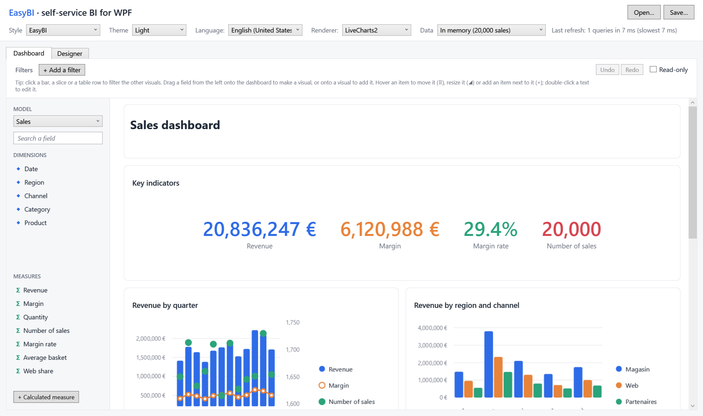
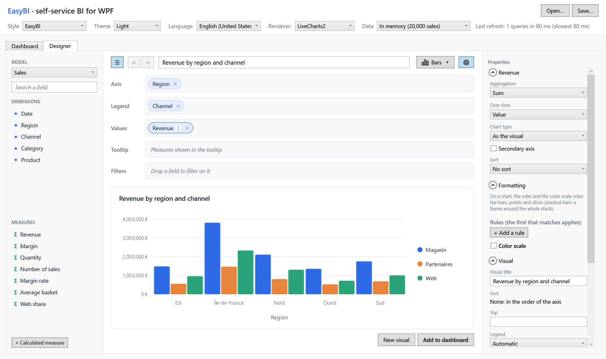
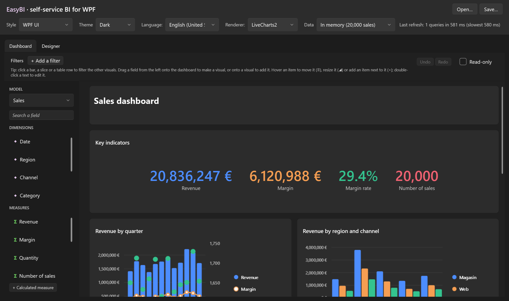

EasyBI¶
Self-service BI for WPF. You declare what can be analyzed; your users build their charts, tables and dashboards by drag and drop, inside your application.

In three steps¶
What your users get¶
-
A designer

Fields dragged onto wells, a dozen types of visuals, a properties panel, undo and redo.
-
Dashboards
Visuals arranged and resized by drag and drop, filled by dragging fields, with global filters and cross-filtering.
-
Their own measures

Formulas such as
SUM([Revenue]; [Region] = "North") / [Revenue], with an editor that suggests what can be written. -
Your look

Light and dark, following WPF UI or Material Design. English and French, switched at runtime.
Built for developers¶
- One query per visual, in your database. Filters, grouping, aggregates, sort and Top N stay in the
IQueryable: with EF Core, one SQL statement per visual, whatever the size of the table. - Plain records and JSON. Visuals and reports are immutable records, saved in a documented, versioned format
(
easybi/v1). - Open everywhere. Lookless controls made of slots, rules on what users may change, your own chart connector and visual types.
How it works¶
flowchart LR
source["Your data<br/>IQueryable"] --> model["Semantic model<br/><i>you declare it</i>"]
model --> visual["Visual<br/><i>users build it</i>"]
visual --> query["Query<br/><i>in your database</i>"]
query --> chart["Chart<br/><i>LiveCharts2, OxyPlot...</i>"]| Package | Role |
|---|---|
EasyBI.Wpf |
The controls: designer, visual, dashboard, filter bar, field list. Brings EasyBI.Core (query engine, JSON) and EasyBI.Abstractions (the records). |
EasyBI.Renderers.LiveCharts2 |
Draws the charts with LiveCharts2. |
EasyBI.Renderers.OxyPlot |
Draws the same charts with OxyPlot. |
EasyBI.Themes.WpfUi |
Follows a WPF UI theme. |
EasyBI.Themes.MaterialDesign |
Follows a Material Design in XAML theme. |
Versions
This site documents every published version: pick one in the selector at the top of the page. dev is the development branch, not yet released.